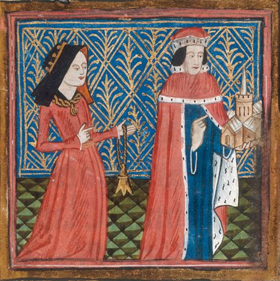

| Chưa đăng nhập | Thảo luận cho địa chỉ IP này | Đóng góp | Mở tài khoản | Đăng nhập | |||||
| Trang chính | Thảo luận | Đọc | Xem mã nguồn | Xem lịch sử | Thêm | ||||
| Biểu quyết cộng đồng Chọn điều phối viên (NguoiDungKhongDinhDanh) • Biểu quyết (Quy chuẩn tên bài + thời gian) • Thảo luận (Đề xuất thêm quyền "Người di chuyển trang" và "Người di chuyển tập tin", Xóa các bài Danh sách nhà cao tầng, Cập nhật Wikipedia:Độ nổi bật (người) và lấy ý kiến về huân huy chương, Cập nhật quy định biểu quyết xoá bài) | |||||||||
| Trang Chính Bài viết chọn lọc Tin tức Bài viết ngẫu nhiên Bài viết ngẫu nhiên Phản hồi lỗi Quyên góp |
WIKIPEDIA TIẾNG VIỆT Bạn chính là tác giả của Wikipedia 1.269.333 bài viết và 829.330 thành viên Tạo bài Sửa bài Tải hình Quy tắc Đặt câu hỏi |
|
| Tương tác
Hướng dẫn Giới thiệu Wikipedia Cộng đồng Thảo luận chung Giúp sử dụng Liên lạc Tải tập tin lên |
Bài viết: Tra cứu Bài mới Hỏi đáp Thỉnh cầu Thư viện
Trợ giúp: FAQ Giúp đỡ Hướng dẫn Chỗ thử Guestbook |
|
| Gõ tiếng Việt Trợ giúp Tự động [F9] Telex (?) VNI (?) VIQR (?) VIQR* Tắt [F12] Bỏ dấu kiểu cũ [F7] Đúng chính tả [F8] |
Bài viết chọn lọc Diễu hành đồng tính chào mừng Ngày Tự hào 2005 và Điều luật Hôn nhân đồng giới ở Tây Ban Nha.
Hôn nhân đồng giới ở Tây Ban Nha được hợp pháp hóa từ 3 tháng 7 năm 2005. Năm 2004, chính phủ của Đảng Công nhân Xã hội Tây Ban Nha vừa được bầu cử, được lãnh đạo bởi Thủ tướng José Luis Rodríguez Zapatero, bắt đầu chiến dịch hợp pháp hóa hôn nhân đồng tính bao gồm quyền nhận con nuôi của các cặp đồng tính. Sau nhiều tranh luận, luật cho phép hôn nhân đồng tính được Quốc hội Tây Ban Nha (là Quốc hội lưỡng viện của Tây Ban Nha gồm Thượng viện Tây Ban Nha và Đại hội Đại biểu Tây Ban Nha) thông qua vào 30 tháng 6 năm 2005 và công bố vào 2 tháng 7 năm 2005. Hôn nhân đồng giới bắt đầu hợp pháp từ Chủ nhật, ngày 3 tháng 7 năm 2005, đưa Tây Ban Nha trở thành quốc gia thứ ba trên thế giới hợp pháp hóa hôn nhân đồng tính trên cả nước theo sau Hà Lan và Bỉ và trước khi hôn nhân đồng tính được mở rộng hợp pháp hóa trên toàn lãnh thổ Canada 17 ngày. [ Đọc tiếp ]
|
Bạn có biết

|
| Công cụ Các liên kết đến đây Thay đổi liên quan Trang đặc biệt Liên kết thường trực Thông tin trang Khoản mục Wikidata |
Bài viết tốt Horii Yuji Dragon Quest là loạt trò chơi nhập vai Nhật Bản do Horii Yuji (hình) sáng tạo ra. Loạt trò chơi đều do Square Enix (trước đây là Enix) phát hành, với các bản dịch và port sau đó cho hệ máy Nintendo DS, Nintendo 3DS và Nintendo Switch do Nintendo phát hành bên ngoài Nhật Bản. Tựa game đầu tiên xuất bản năm 1986, tính đến nay đã có 11 bản chính truyện, cùng với nhiều ngoại truyện phát hành ra toàn thế giới. Ngoài ra, còn có rất nhiều manga, anime và tiểu thuyết xuất bản theo cùng thương hiệu, hầu hết trò chơi trong loạt chính đều có bản chuyển thể liên quan. [ Đọc tiếp ]
|
Ngày này năm xưa 18 tháng 10: Ngày Độc lập tại Azerbaijan (1991).
|
| In/xuất ra Tạo một quyển sách Tải về dưới dạng PDF Bản để in ra |
Danh sách chọn lọc Mariah Carey có 15 tuần đứng đầu Hot 100 vào năm 2005
Xuyên suốt cả năm 2005 có 8 đĩa đơn đứng đầu Billboard Hot 100 — bảng xếp hạng những đĩa đơn thành công nhất tại thị trường âm nhạc Hoa Kỳ. Bảng xếp hạng này do tạp chí Billboard xuất bản cùng những số liệu được tổng hợp bởi Nielsen SoundScan dựa trên doanh số của đĩa thường, tải kỹ thuật số và tần suất phát sóng. Trong năm 2005, có 5 nghệ sĩ sở hữu đĩa đơn đạt vị trí quán quân đầu tiên tại Mỹ, dù cho vai trò nghệ sĩ chính hoặc góp mặt khách mời: Mario, Olivia, Gwen Stefani, Carrie Underwood và Chris Brown. Stefani có được đĩa đơn quán quân đầu tiên của mình tại Mỹ, dù cho cô đã và đang hoạt động cùng ban nhạc No Doubt từ năm 1986. [ Đọc tiếp ]
|
Các lĩnh vực
|
| Ngôn ngữ khác English 中文 Français |
Hình ảnh chọn lọc |
|